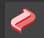
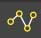
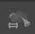
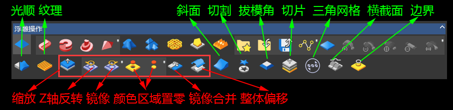
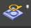
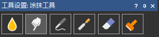
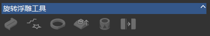

ArtCam2018功能参考手册
考虑再三，还是写成参考手册的形式，方便大家日常查找
-
浮雕建模：从二维矢量向上拉起，生成2.5维的浮雕，包括如下工具
创建浮雕：介绍了如何从二维矢量拉出浮雕

点击打开演示视频：
 把平面轮廓拉起一个小凸包。
把平面轮廓拉起一个小凸包。
2、双线扫动：  截面线绕2条驱动线，扫描形成，零平面封底。
 2条截面线绕1条驱动线，扫描形成，零平面封底。
2条截面线绕1条驱动线，扫描形成，零平面封底。
 截面线绕起始点和终点的连线，旋转180度。
截面线绕起始点和终点的连线，旋转180度。
 自定义拉起的凸包形状
自定义拉起的凸包形状
 类似形状编辑器，优化了接头部分。
类似形状编辑器，优化了接头部分。
 创建类似毛衣的编织效果。
创建类似毛衣的编织效果。
 生成斜面。
生成斜面。
11、浮雕库： 打开浮雕库，选择需要的浮雕
打开浮雕库，选择需要的浮雕
12、导入：导入*.rlf浮雕文件
13、保存： 导入*.rlf浮雕文件
导入*.rlf浮雕文件
14、沿矢量粘贴：沿着曲线，粘贴浮雕

16、相加： 浮雕1+浮雕2
浮雕1+浮雕2
17、想减： 浮雕1-浮雕2
浮雕1-浮雕2
18、最高： max(浮雕1,浮雕2)
max(浮雕1,浮雕2)
19、最低： min(浮雕1,浮雕2)
min(浮雕1,浮雕2)
20、替换：浮雕2替换浮雕1
-
编辑浮雕：介绍了如何编辑创建的浮雕

点击打开演示视频：
1、光顺浮雕： 让浮雕表面变得光滑
让浮雕表面变得光滑
2、纹理浮雕：
 通过图像文件，增加浮雕细节（类似三维中的纹理贴图思想）。1
通过图像文件，增加浮雕细节（类似三维中的纹理贴图思想）。1
4、Z轴反转： +Z变-Z
+Z变-Z
5、反转浮雕：镜像反转

8、浮雕镜像合并：镜像浮雕
 对整个浮雕模型，进行偏移。
对整个浮雕模型，进行偏移。
 导出浮雕为三维模型。
导出浮雕为三维模型。
 生成截面轮廓。
生成截面轮廓。
16、通过浮雕创建边界： 创建某个高度的截面轮廓线
创建某个高度的截面轮廓线
-
雕刻工具：类似捏泥巴的方式，进行浮雕创作

-
其它工具

1：不知道做啥用的
2：Z轴反转
3：Z轴镜像

快速创建宝石镶嵌矢量的工具

用于制作圆雕：圆雕还是不在这个2.5维的浮雕软件弄了吧。
点击打开演示视频： 旋转浮雕
-